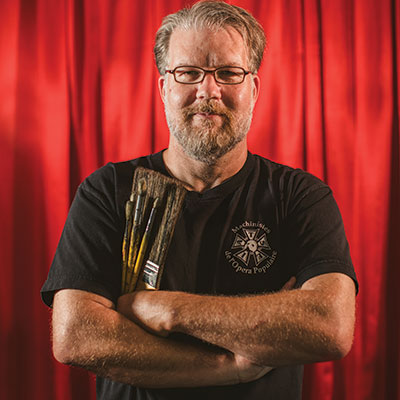

Wizards in the wings
Behind the curtain with Tulsa's backstage talent
You’re settled into a theater, waiting for a show to start. You adjust a little in your seat, check the program, get ready to relax and enjoy. What you don’t see all around you, in the walls and wings and ceiling, are the people who, almost in secret, have been preparing this moment for months—waiting, like a troupe of wizards with gaff tape and sewing kits, to unfold a whole new world.
Welcome to backstage, where arts workers with prodigious talent, education and experience make realities exist that didn’t exist before. These people make their living making worlds in which we can escape and be illuminated, connected, transformed. Just as much as the actors in the spotlight, these are the people whose work really makes the magic.
Put another way: Magic is work. And theatre is indisputably a job- and revenue-creating industry. (Data compiled by Oklahomans for the Arts showed that Oklahoma arts and culture nonprofits generated $872,830,632 in economic activity in fiscal year 2015.) Alongside those we spoke to, there are dozens more across the city whose income comes from theatre organizations that turn right back around and engage the community—both locals and tourists, both economically and
culturally.
They are problem-solvers. Collaborators. Researchers. They are indispensable members of the teams that make the shows that make life, for a few short hours, a thing of beauty, hope and heart.
The wardrobe supervisor

In the old days, this job was called “wardrobe mistress,” and she who held it was feared and honored in the extreme. (You really don’t want to offend the person whose job it is to make you not be naked onstage.)
Tulsa boasts a long lineage of revered wardrobe supervisors. The latest person to fill these shoes at Tulsa Ballet is Tori Highfill, who for almost four years has overseen the creation of costumes that can withstand sweat and spotlights and also flex and float in any choreography.
Highfill earned a B.A. in theatre at Oklahoma State University. “I was involved in my high school’s drama department but never really thought about going into technical theatre,” she said. “After I took my first costume tech class in college, it all fell into place.”
Working in Seattle after graduation gave Highfill seven years of experience in costume shops and backstage on shows such as Memphis, Shrek! The Musical, and Catch Me If You Can. For Tulsa Ballet, she’s worked on Dracula, The Green Table and Tchaikovsky, among dozens more.
A wardrobe supervisor manages huge projects and tiny details all at once. Each existing costume must be altered to fit each new dancer who wears it. “We build new costumes throughout the year for original works as well,” Highfill said. “And I do a lot of the pattern manipulation, cutting, stitching and dye work.
“At the theatre, I help with the laundry and maintenance, and make sure everyone has everything they need. I do most of the principal dancers’ quick changes, and sometimes they are quick.”
In any show, but particularly in a dance performance, costume malfunctions are a clear and present danger. Highfill’s main job during a show? “Lots of mending in the dark! I keep a threaded needle with me in my apron at all times.”
The stage hand

Matt Morton has worked in what he calls “the hidden side of the art” for over 25 years. “I have built scenery and props from Ohio to New Mexico. I have painted scenery for opera, ballet, film, television and countless plays. Each of these venues presents its own challenges and perks. I have designed scenery, lighting, props, costumes, and have directed. Any of these jobs would fill this piece with what the work entails.”
Morton wasn’t a kid who liked being in shows, finding building and drawing more to his taste. He tried architecture and graphic design in college at Henderson State University in Arkansas, but it wasn’t until he took a theatre lighting course that “it started to feel right,” he said. “Once I was immersed in the production world, I saw no other alternative.” With an MFA in scenic design and scenic art from Ohio University, Morton works for the stagehand union (which entails everything from rigging and set management to electrical work and sound assistance) on Tulsa’s many touring shows, at Tulsa Ballet, and as a designer for local companies in productions such as Peter and the Starcatcher and I Love You, You’re Perfect, Now Change. Most memorably for him, he worked as a scenic artist on the film August: Osage County, where—in a classic problem-solving moment—he offered his own 1992 Toyota when the film crew needed an extra car
for a shot.
“Honestly, the point of most of what we do is solving challenges onstage,” Morton said. Asked for an example, he responded: “[That’s] like asking a fireman to give an example of one time he got sweaty.
“Joking aside,” he continued, “that is the game. We backstage are the ones that ensure the audience can experience the actors, and our job is to help that happen any way we can. Even as a painter I see that. I have had to add grit to paint to make it less slick on a stage,” he said. “Crushed walnut shells ended up being the best option that time.”
The stage manager
Though it’s a notoriously hard-to-quantify role, just about everyone involved in theatre would agree: Without the stage manager, even the most brilliantly constructed show would find itself in chaos.
“Stage managers are like the moms who are able to juggle 28,567,983 things at once and still manage to look cute that day and feed the children,” actor Kia Hightower said.
But what exactly do they do? The short answer is: keep the train on the rails, from calling cues that tell the sound operator it’s time for the music to fade out, to keeping track of how the actors move onstage. “If there are transitions where set pieces need to be moved, I’m the one who organizes those,” stage manager Susan Fenrich explained. “If there are any issues between anybody on the team, I’m there to help resolve them.
“Basically, I keep track of everything in productions, get information to the correct people, and make sure the show is running as smoothly as possible.”
Fenrich has the effective stage manager’s two most important characteristics: sheer unflappability and insane attention to detail. (So many highlighters. So many spreadsheets. So much punctuality.) But it hasn’t all come easily.
“I was one of those kids who would hide behind their parents’ legs when a stranger talked to them,” Fenrich said. “I’ve had to make myself be firm. I think I just told myself one day, ‘You’re the stage manager now. People are going to be coming to you for anything and everything. You can’t be quiet and timid anymore.’”
Studying theatre at Northeastern State University in Tahlequah gave Fenrich the chops to deal with whatever comes up. In the past 18 months, she’s helped shows from Shakespeare in Love (American Theatre Company) to the 25-Hour Play Festival (Heller Theatre Company) go off without a hitch. But one of her favorite moments happened when things weren’t going as planned.
“A lot of things [went] wrong during this particular show and I was freaking out inside, thinking it was ruined,” she remembered. “Then I heard the audience laugh and I realized the show wasn’t ruined at all. The audience was still engaged in this show. They were just enjoying the moment. That’s when I realized I needed to focus on the big picture. Not every show is going to be perfect. Things are going to happen that are out of your control, but as long as the audience is still having a good time, that’s all that matters.”
The scenic designer
With a mix of practical mechanics and a visual artist’s eye for balance and dimension, the scenic designer expands a world created in the privacy of rehearsals into a world that everyone can enter.
Aaron Kennedy got in through what must have been an especially dynamic production of Bandit Ben Rides Again, in second grade, and has never really left. Originally from Kansas, he earned a BFA in theatre at Emporia State University and a MFA in scenic design at the University of Wisconsin-Madison. He’s been in Tulsa for two years, serving as assistant professor of theatre and technical theatre at TCC Southeast. He’s currently working on The Wizard of Oz for Broken Arrow Community Playhouse and will design the set for the upcoming TedX event at TCC Metro’s Center for Creativity in the fall.
Kennedy explained that a scenic designer is many things: “Part architect, part engineer, part inventor, part sculptor, part painter, part storyteller. The scenic designer needs to turn a director’s words and ideas into a physical and aesthetic environment that solves all the practical problems that are presented in the script, aligns with the director’s vision, and is interesting for the audience and the performers. Then there are the practical skills a designer needs like drawing, painting, drafting, and increasingly the use of digital technologies like Photoshop, animation, video editing, and projection mapping.”
But the main skill a scenic designer needs to bring to the table, Kennedy said, is collaboration. Throughout any production process, he meets with just about everyone on the team. “In the end, all the elements are dependent on each other to tell one cohesive story,”
he said.
The scenic designer’s work isn’t necessarily finished just because the curtain’s going up. Kennedy remembered a notable moment during opening night of a production of South Pacific.
“In one of the early scenes, a desk that we had put on casters had one of its legs crack, and the wheel came off. That desk was supposed to be in several other scenes, so between fly cues, the shift crew ran the desk into the workshop behind the stage. In time with the music and applause (to try to hide the noise), I welded up a sort of brace for the cracked leg, then I welded the caster back to the bottom of the leg, and tried to grind off the sharp edges as best I could. All this happened in approximately five minutes, and the desk made it on for its next scene.”
No sweat. But what difference does it really make? Whether the audience knows it or not, every detail of the set—like every member of the team—is working together to create that magical experience.
“As a scenic designer, my favorite moment of any production is sitting in the audience on opening night and seeing all the weeks and months of work come together for the first time with an audience,” Kennedy said. “It still gives me chills every time.”
The actor
Acting may what we think of first when we think about theatre, but it’s not enough to make a show complete. Actor Kia Hightower put it like this: “Without designers, stage management, and tech crew, all theatrical productions would look like children tried to put on a show alone without the help of any adults. Tech members are the glue that keep the show together.”
The people who do so much to make this sort of magic usually don’t get (or even want) the glory that comes with the spotlight. But that doesn’t mean they don’t deserve it. “We cannot do a show without them,” Hightower said. “If nothing goes wrong in a theatrical production, it’s because the tech crew is doing their job.
“I’ve seen crew members crawling upstage to fix lights or wiring without audiences seeing them,” she continued. “I’ve seen crew members running around backstage looking for actors who are about to miss their cue to go on stage. It’s insane and a special skill.”
Hightower started acting as a freshman at Booker T. Washington High School. A B.A. in theatre from OSU launched her toward her current position as the speech and drama teacher at Glenpool High School and her work as an actor in Tulsa productions such as “Heller Shorts,”
Cabaret, Ragtime, Neat and Beauty and the Beast.
Hightower said the experience of walking into the theater and seeing for the first time what the backstage crew has been creating can be summed up in one word: magical. “The stage managers and directors always explain what the set is going to look like, but it’s not the same as seeing it in person,” she said.
As you watch actors take their bows at the end of a show, you may see them point to the booth at the back of the theater and applaud. They’re thanking the backstage crew. “These humans deserve as much applause from the audience as the actors get,” Hightower said. “If not more.”


.jpg)
.jpg)